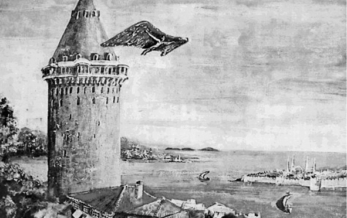
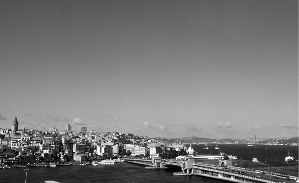

İlk Uçan Türk Masalı
İlk uçan kişinin Türk olmadığını kabul etmek kolay değil. Nasıl kolay olsun ki? Hezarfen Ahmet Çelebi’miz, Galata Kulesi’nden uçarak Üsküdar’a konmuş ve tarihe adını altın harflerle yazdırmıştı. Biz bunu hep böyle bildik. Ancak tarihte böyle bir olayın olmadığı iddia ediliyor.
Türkçe’de yayınlanmış herhangi bir ansiklopediyi açıp baktığınızda, Hezarfen Ahmet Çelebi’ye dair bilgilerin hemen hemen aynı olduğunu görürsünüz. Çünkü bu bilgiler tek bir kaynağa, Evliya Çelebi’ye dayanıyor. O da aşağıda bütünü yer alan pragraf: “Hezarfen Ahmet Çelebi: Evvela Okmeydanı’nın minberi üzerinde rüzgarın şiddetinde kartal kanatlarıyla sekiz dokuz kere havada uçarak talim etmiştir. Sonra Sultan Murad Han Sarayburnu’nda Sinan Paşa köşkünden seyrederken, Galata Kulesi’nin ta tepesinden lodos rüzgarıyla uçarak Üsküdar’da Doğancılar Meydanı’nda inmiştir. Sonra Murad Han kendisine bir kese altın ihsan ederek: ‘Bu adam pek korkulacak bir adamdır. Her ne isterse elinden geliyor. Böyle kimselerin durması doğru değil.’ diye Cezayir’e sürmüştür. Orada vefat eyledi.”
Küçük büyük bütün tarih kitaplarında, Osmanlı’yı enine boyuna ele alan külliyatlarda, daha özelde Türk havacılık tarihi veya tarihte mucitler başlığı taşıyan çalışmalarda Hezarfen Ahmet Çelebi’den ilk uçan kişi, ya da “İlk uçan Türk” olarak söz edilmesine yol açan yegane bilgi Evliya Çelebi’nin Seyahatname’sinin İstanbul’u anlatan birinci cildinde yer alan yukarıdaki satırlar. Bu olayın varlığına işaret eden tarihi herhangi başka bir kayıt yok. Konu hakkında bilgi veren kaynakların çok azı olayın sadece Evliya Çelebi tarafından nakledildiğine değinme gereği duyuyor. Ansiklopedilerde yer alan Hezarfen Ahmet Çelebi maddesi Evliya Çelebi’nin naklettiklerinden başkası değil: “Hezarfen Ahmet Çelebi Galata’dan Üsküdar’a kadar uçma becerisi göstermiş ve dönemin padişahı 4. Murad tarafından hem iltifat görmüş hem de bir nevi sürgün edilmiştir.”

Hezarfen Ahmet Çelebi’yi Galata Kulesi’nden uçarken gösteren bir çizim.
Hezarfen efsaneden başka bir şey değil
Osmanlı tarihi konusunda söz sahibi birkaç kişiden biri olarak nitelendirilen Prof. Dr. İlber Ortaylı, “ilk uçan Türk” meselinin, sözü edilen uçma ve sürülme olayının gerçek olmadığını ifade ediyor. İlber Ortaylı, olayın sadece Evliya Çelebi tarafından naklediliyor olması ve tarih yazıcılığının genel değerlendirilmesi sonrasında böyle bir olayın var olamayacağı kanaatine ulaştığını söylüyor. Ortaylı’nın ve konu üzerine düşünmüş diğer tarihçilerin söylemlerinden söz konusu olayın zaman içinde ‘efsane’ye büründüğü anlaşılıyor. Bilindiği gibi bir şey efsane olduktan sonra artık onun nerede, nasıl, ne şekilde vuku bulduğu çok makul bilgilerle tesbit olunamasa bile gerçek olduğuna inanılır, tersi düşünülmez, sorgulanmaz. Türkiye’nin ve dünyanın önde gelen Osmanlı otoritelerinin birlikte hazırladıkları Yeni Türkiye Yayınları imzasını taşıyan 12 ciltlik Osmanlı külliyatında 700 sayfalık Bilim cildi konuyla ilgili önemli bir uyarıda bulunuyor. Yayın kurulunda Prof. Dr. Halil İnalcık, Prof. Dr. Nejat Göyünç, Prof. Dr. Yusuf Halaçoğlu, Prof. Dr. Ekmeleddin İhsanoğlu, Prof. Dr. Ercüment Kuran, Prof. Dr. Mübahat S. Kütükoğlu, Prof. Dr. Jacob M. Landau, Prof. Dr. Ahmet Yaşar Ocak, Prof. Dr. İlber Ortaylı, Prof. Dr. Stanford Shaw, Prof. Dr. Bahaeddin Yediyıldız gibi otorite isimlerin yer aldığı Bilim cildinin bölüm girişinde büyük puntolarla bunu itiraf etme gereği hissedilmiş. “Galata Kulesi’nden Üsküdar’a kanat takarak uçtuğu öne sürülen Hezarfen Ahmet Çelebi, sadece Evliya Çelebi’nin Seyahatname’sinde anıldığı ve başka hiçbir kaynak tarafından doğrulanamadığı için ‘efsane’den öte bir anlam taşımaz.”

Tarihçiler Evliya Çelebi’nin üslübunun mübalağalı olduğu konusunda hemfikir. Tarih yazımı ve tarih okumacılığı üzerine çalışan herhangi bir tarihçinin tavsiyesi “çok gezen, gezdiği yerler hakkında bugüne çok değerli bilgiler bırakan Evliya Çelebi’nin zaman zaman fanteziye kaçan bilgiler verdiği, zevkli bir okumaya salık veren yazılarının tarih yazıları değil bir gezi notları ya da hatırat şeklinde algılanmasının daha doğru olacağı” şeklinde. Diyanet’in hazırladığı İslam Ansiklopedisi’nin Evliya Çelebi maddesinde Prof. Dr. Müçteba İlgürel, Evliya Çelebi’nin hayatı ve eserleri hakkında geniş bilgi verdikten sonra onun üslubuna dikkat çekiyor. “Bazen naklettiği şeyi daha da renklendirmek için uydurma bir haber veya hadise ortaya atar. Bu arada okuyucunun ilgisini çekmek maksadıyla aklın almayacağı garip olaylara yer verdiği de görülür. Mesela fillerin geçtiği köyde kadınların fil doğurması, gaipten haber veren mağaralar, çaresiz dertlere çare bulan hekimler vb. olağanüstü şeyler onun üslup ve anlatım güzelliğine çeşni kattığı gibi, bu tür hikâyelere meraklı geniş kitlelerin ilgisini çekerek bu sayede eserine popüler bir karakter vermeyi de amaçladığı söylenebilir.” Seyahatname’sinde Erzurum’da havaların soğukluk derecesini anlatmak için bir çatıdan bir çatıya atlayan bir kedinin havada donup kaldığını nakleden Evliya Çelebi çok okunan, 17. yy. Osmanlı coğrafyasını ve kültürünü resmeden bir kişi olmasına rağmen bilinen mübalağası nedeniyle son tahlilde yazılarına temkinle de yaklaşılması gereken bir isim.
Şenliklerin bir parçası: Uçma animasyonu
Geçen yıllarda Osmanlı padişahları üzerine yazdığı kapsamlı eserle kendinden söz ettiren Toplumsal Tarih dergisinin yayın kurulu üyesi Necdet Sakaoğlu, yukarıda sözü edilen ‘tek kaynak Evliya Çelebi” olgusuna katılarak gerçeği dahi iyi anlayabilmek için İstanbul’da padişahların talimatlarıyla gerçekleştirilen şenliklere ve şenlik kültürüne bakmamız gerektiğini söylüyor. 4. Murad’ın kızı Kaya Sultan’ın doğumu vesilesiyle düzenlenen ve söz konusu olayların yaşandığı şenlik İstanbul’da yapılan ne ilk ne de son şenliktir. İstanbul’da sık sık büyük şenlikler düzenlenmektedir ve bu şenlikler görkemli gösterilere sahne olmaktadır. Necdet Sakoğlu’na göre, eski Roma’da hatta Antik Yunan’da da böyle şenliklerde anfitiyatroların bir tarafından bir tarafına uçma animasyonları yapılırdı. Osmanlı’da daha önceki padişahlar döneminde de yer yer padişah tarafından izlenen, halkın coşkuyla katıldığı şenlikler düzenlenir ve dünyanın dört bir yanından ilginç yetenekleri olan kişiler, ‘canbazlar’ bu ‘emperyal’ devletlere özgü görkemli gösterilere katılırdı. Eğer padişahın takdirini kazanırsa bir kese altını hak ederdi. Necdet Sakoğlu’na göre Galata’dan uçarak Üsküdar’a konma olayı İstanbul’da daha önce de benzerleri yapılan eğlencenin bir unsuru, belki de daha ‘muhteşem’ olanıdır. Sakaoğlu’na göre Hezarfen Ahmet Çelebi isimli kişi Galata Kulesi’nden uçmuş olabilir; ama Üsküdar’a değil kulenin dibi kabul edilebilecek Karaköy’e ya da Kabataş’a inmiştir ancak. Necdet Sakoğlu “Padişahın önünde yapılan sirk gösterileri” olarak niteliyor olayı.
Belki Hezarfen diye birisi de yok
Osmanlı bürokrasisi üzerine yaptığı çalışmalarla tanınan Marmara Üniversitesi öğretim görevlisi Yrd. Doç. Dr. Erhan Afyoncu, kendisinin genel olarak Evliya Çelebi’nin verdiği bilgilere güvenmekle birlikte Hezarfen Ahmet Çelebi olayını doğrulayacak başka bir kaynağın olmadığını, dolayısıyla bu bilginin ihtiyatla karşılanması gerektiğini; ama ‘uçmamıştır’ gibi kestirip atılmasının da doğru olmadığını söylüyor. Erhan Afyoncu, söz konusu kimliklerin de meçhul olduğunun altını çiziyor. Hezarfen Ahmet Çelebi ve Lagari Hasan Çelebi ismine rastlanılan başka bir tarihi belge ya da kayıt yok çünkü. “4. Murad’ın bir kese altınla ödüllendirdiği yazılıyor. Osmanlı’da mali anlamda her şey kayıt altındadır. Eğer böyle bir şey varsa hazine defterinde kayıtlı olması lazım” diyor Afyoncu. Ayrıntılı bir uğraşı gerektirecek böyle bir çalışma yapılır mı yapılmaz mı bilinmez; ama bilinen bir şey var ki Hezarfen Ahmet Çelebi isimli bir kişiye bir kese altın verildiğini gösteren herhangi bir kayıt yok bugün.
O şartlarda uçmak mümkün değil
Bütün tarihi verileri, kaynakları bir kenara bırakarak “Galata Kulesi’nden Üsküdar’a uçmak mümkün mü?” sorusunu sormamız gerekiyor. Konu üzerine çalışan İstanbul Üniversitesi öğretim görevlisi Doç. Dr. Mustafa Kaçar’a göre, bu uçuşun kuşlarda olduğu gibi hareketli kanatlarla olması mümkün değildir. Hezarfen’in tek bir alternatifi kalıyor: Bugün adına yelken kanat denilen kanatları sabitlenmiş bir aygıt ya da planör benzeri bir şey. Aşağıda da göreceğiz ki bugün bile en modern ve en yeni araç gereçlerle bu uçuşun gerçekleşmesi zor.
Uçan ilk Türk teklifi kabul görmedi
İlk uçan Türk olarak nitelendirdiğimiz Hezarfen Ahmet Çelebi’yi bizden başka kimse ilk uçan kişi olarak tanımıyor, tanımamakla kalmayıp ‘uçmamıştır’ deniliyor. 1997’de ODTÜ tarafından Hezarfen Ahmet Çelebi’nin Üsküdar’a uçmasıyla ilgili içinde her türlü hesaplamaların yer aldığı kapsamlı bir rapor hazırlanıyor ve bu ilk uçan kişinin tescilinin yapılacağı kurumun Paris’teki merkezine gönderiliyor. Paris’e gönderilen yazıya bu hesaplamalarda yanlışlık var, böyle bir uçuş olması mümkün değil cevabı geliyor. Hesaplamalarda Hezarfen’i karşı kıyıya ulaştıracağı düşünülen rüzgar şiddeti yüksek verilmiştir, halbuki rüzgarın hızlı olması uçuşu ve yükselmeyi engelleyen bir faktördür. Bize bu bilgileri veren kişi THK Türkkuşu Genel Müdürlüğü’nde yelken kanat hocası olan Vedat Sarıkaya. Sarıkaya’ya göre uçuşun sağlanması için rüzgarın düşük olması, termalin (ısı) yüksek olması gerekiyor. Vedat Sarıkaya, bulut çekimi, rüzgar hızı, hava ısısı vs. en uygun koşullarda olsa dahi uçuşun çok zor olduğunu söylüyor. Yelken kanat’ın süzülme oranı 1/20 civarındadır. Bu yükseklik/mesafe demek. Yani hangi yükseklikten ne kadar mesafe gidilebileceğini anlatır. Bu oran rüzgarlı havalarda 1/40-50’ye çıkabilmektedir. Hesaplamalara göre Galata Kulesi’nin deniz seviyesinden yüksekliği 103 metre, Doğancılar’ın (Üsküdar) deniz seviyesinden yüksekliği ise 40 metre. Uçuş profilinde de kalkış ve iniş noktaları arasında 62 metrelik yükseklik farkı bulunuyor. Galata ile Doğancılar arasındaki mesafe ise 6 km. Yani süzülme oranı 1/100. Uzmanlara göre delta kanatlarla böyle bir oransızlıkta uçuş yapmak mümkün değil.
O mesafe bugün bile alınamaz
İki yıl önce İzmir Bozdağ’dan Salihli’ye doğru 30 km.lik mesafeyi yamaç paraşütüyle geçen Daedalus Yamaç Paraşütü Takımı Kaptanı Cumhur Dilek’e göre, yukarıdaki yükseklik/mesafe oranlarından hareketle bugün en modern malzemelerle bile bu mesafeyi uçarak geçmek neredeyse imkânsız. Evliya Çelebi Hezarfen Ahmet Çelebi’nin Lodos’un yardımıyla uçtuğunu söylüyor. Yelken kanat uçuş hocası Vedat Sarıkaya, rüzgarın uçuşta yardımcı etken olduğunu; fakat Lodos’un uçuşu olumsuz etkileyen bir rüzgar olduğunu söylüyor. Lodos güneyden kuzeye, yukarıdan aşağıya eğilimli esen bir rüzgardır üstelik. Güneyden kuzeye esen lodoslu bir havada batıdan doğuya uçtuğu söylenen Hezarfen Ahmet Çelebi’nin uçması için gerekli olan hava koşulları lehine değil, aleyhine işlemektedir. Duyumlara göre, ODTÜ daha önce Paris’ten dönen uçan ilk Türk iddiasını sürdürmekten yana ve bugünlerde yeni bir rapor hazırlığı içindeler. Ama, tarihi veriler ve uçmaya ilişkin hesaplar Hezarfen Ahmet Çelebi’nin Üsküdar’a uçmadığını gösteriyor. Bu bilgilerin bir diğer sonucu, yıllardır Osmanlı aleyhtarlarının padişahların zalimliğini ve bilime duydukları düşmanlığı kanıtlamak için ileri sürüp sıkı sıkıya sarıldıkları Hezarfen Ahmet’in “sürülmesi” olayının da dolaylı olarak hükümden düşmesi oluyor. Eğer bir uçma söz konusu değilse, bir kese altın ve Cezayir’e sürülme ve hatta güya padişahın “Böyle adamlardan korkulur” gibi gerekçeler ileri sürdüğü vakası da mesnedini kaybetmiş oluyor.
Aksiyon, 388. sayı